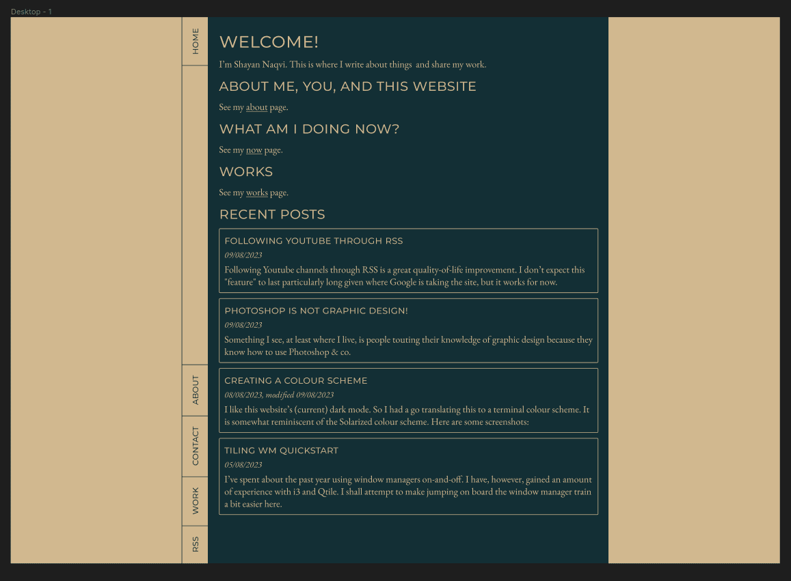

I enjoy reading about efforts to redesign, so I thought I’d do my
own.
I did like this site’s old design. But I could have done
better. Here’s a screenshot of the “original”: The "original"
I started out in Figma with this:
It carries over the vertical navigation bar from the original. It was alright, but
I didn’t particularly love the colours and fonts. The same, but with
solid colours instead of gradients:

Had a go with a high-contrast/monochrome version of this design. I
liked it more.
Getting closer to the new layout. It is somewhat inspired from the website of Collaborative Fund.
The font was a very conscious choice. I was a bit indecisive between Libertinus Sans (I love this font so much)
and Piazzolla. I decided to go with Piazzolla. I could have simply set the font-face to serif, this would have
made the site faster. But Piazzolla is a very attractive font, so I decided I would make a compromise there. I
love
its angular look.
a more sensible layout
Now came the task of translating this design to HTML and CSS. I found it not
too difficult a task. It was manageable, especially with help
from Figma’s dev tools thingy.
Figma's "devtools"
Now with padding/margins…
And a mobile layout…
The dark mode colour scheme is the same as I mentioned in this article.
It’s a bit like Solarized, but a bit warmer in its colour choice. This also shows the
footer thing.
Light mode colours remained the same as before.
The same design, but starting to make use of accent colours. I chose red, green,
and blue by accident. I only realized I had done this later on. But I
like it still.
The red is a bit loud here:
Then the iconography in the footer boxes. I did the web and mail icons myself.
The RSS icon was pre-made. These are inline SVGs. I chose to do
this so that I could manipulate their colours without fussing around
with filters. It will, however, make it much harder to change these
icons in the future.
Now comes the template file. A fun task.
Pretty close now to the final:
And the final! The difference between this and the screenshot above is the colours. The green is too bright above,
a
bit of a sore sight for a so-called “dark mode”.
There we are!
I’m happy with this for now, and I hope I won’t bother rewriting this
site’s CSS again. It’s a novel thing to do, but a bit draining at
times. Which one do you like?
This article was written on 11/08/2023. If you have any thoughts, feel free to send me an email
with them.
Have a nice day!